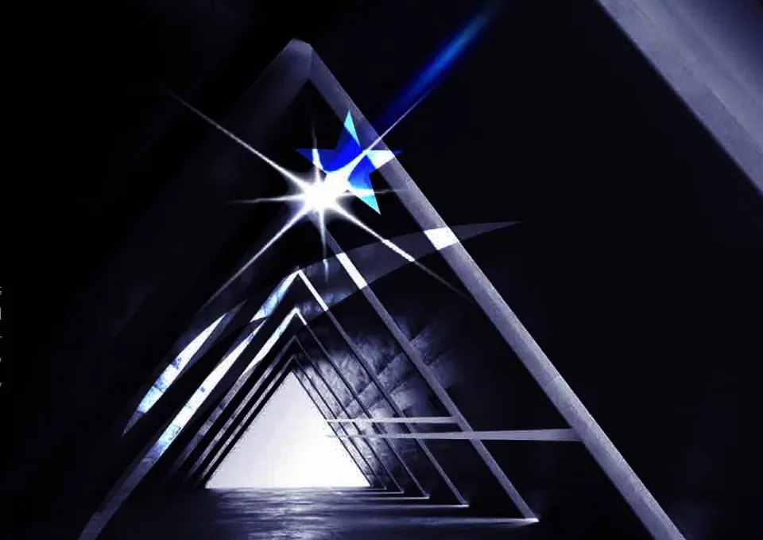
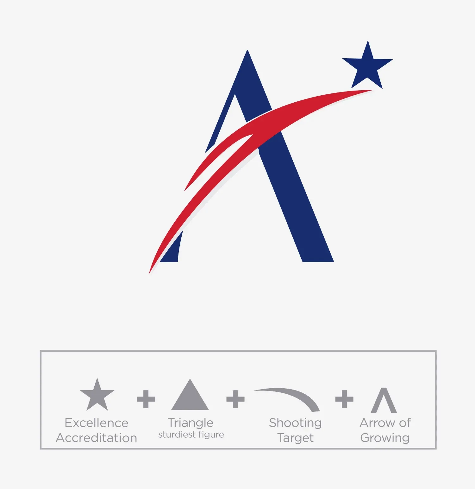
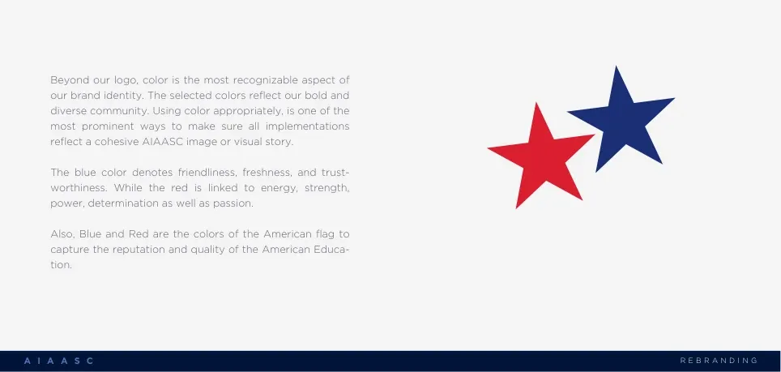
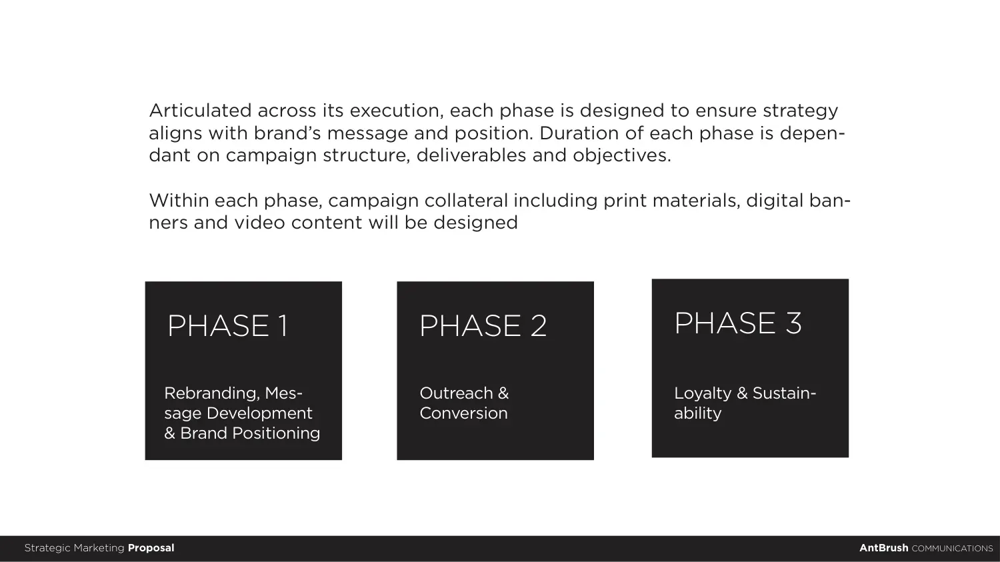
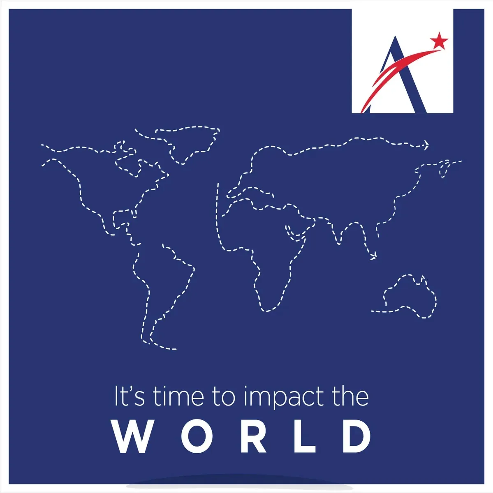
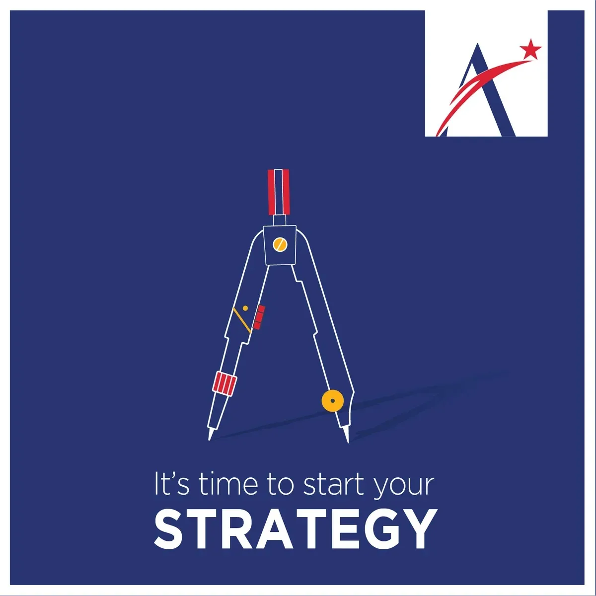
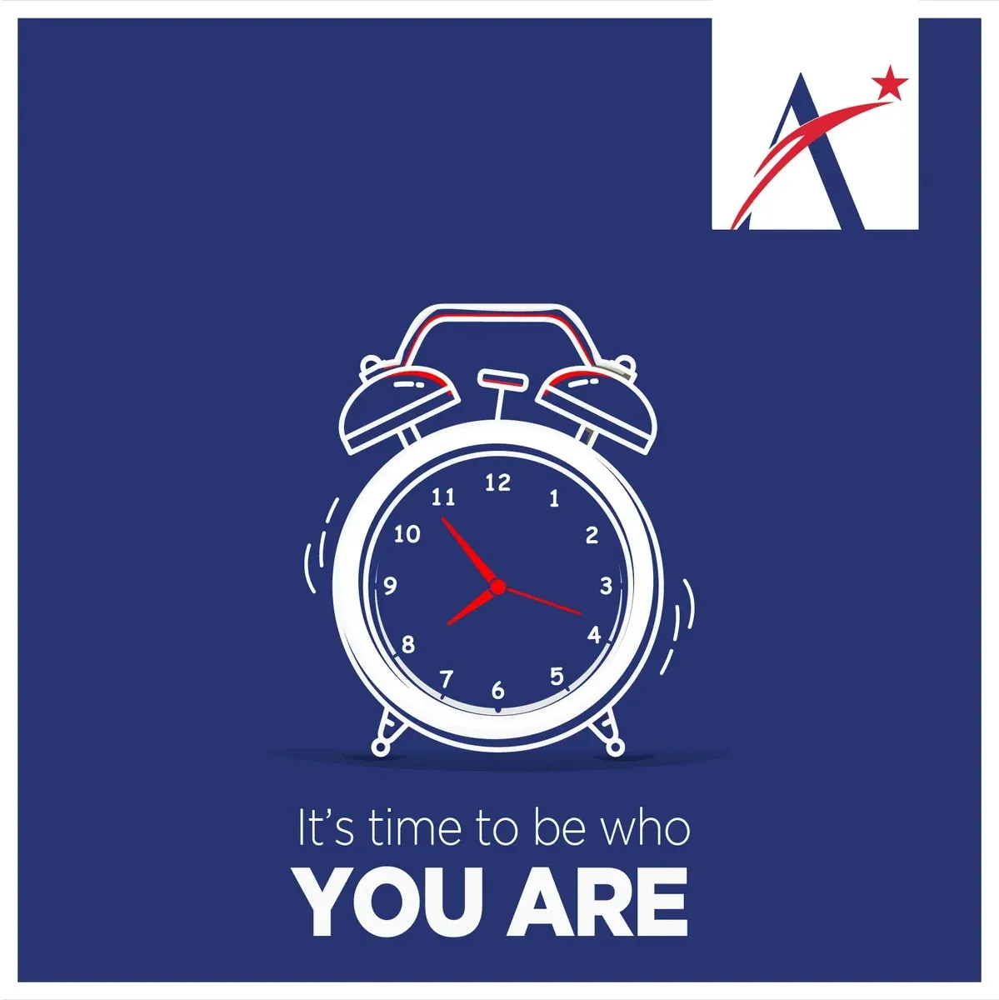
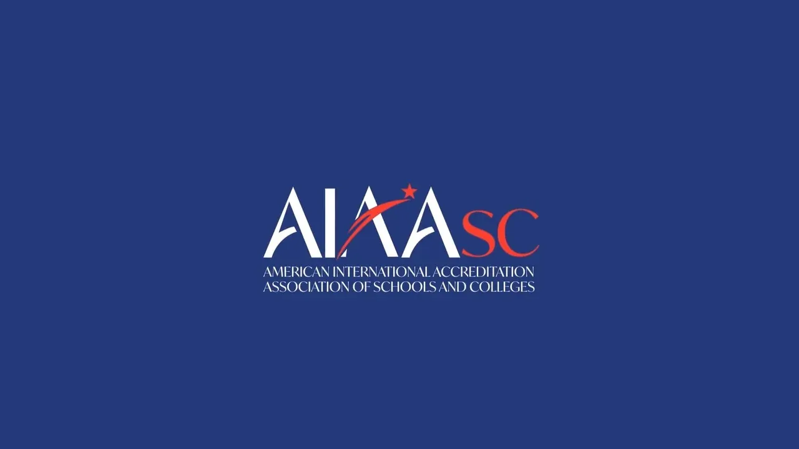

AIAASC · from Dubai · 2020–22
Make standards clear.
Creative direction · AIAASC repositioning, identity and campaignsAntBrush · from Dubai · 2020–22
An American accreditation association for schools, taking its standard to the world. We began with a plan, not a logo: who it serves, where, and in what order. The mark came from its own flag: a red line rising through the A to a star. Then a year of work under it, led from Dubai.

The idea
A star through the A.
A is for Alpha, the first. We sent a star through it. Blue and red come from the American flag. The two letters the mark leaves out, S and C, turn red in the name.



In use
A year under one mark.
Campaigns for the new school year, films on what accreditation gives a school, programmes for teachers and children. Every film ends on the mark.




The full story
Every step, in order.
American International Accreditation Association of Schools and Colleges. Led from Dubai. Design with Nevin Nawar.
See the full story